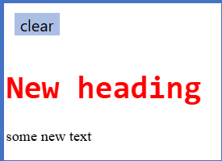
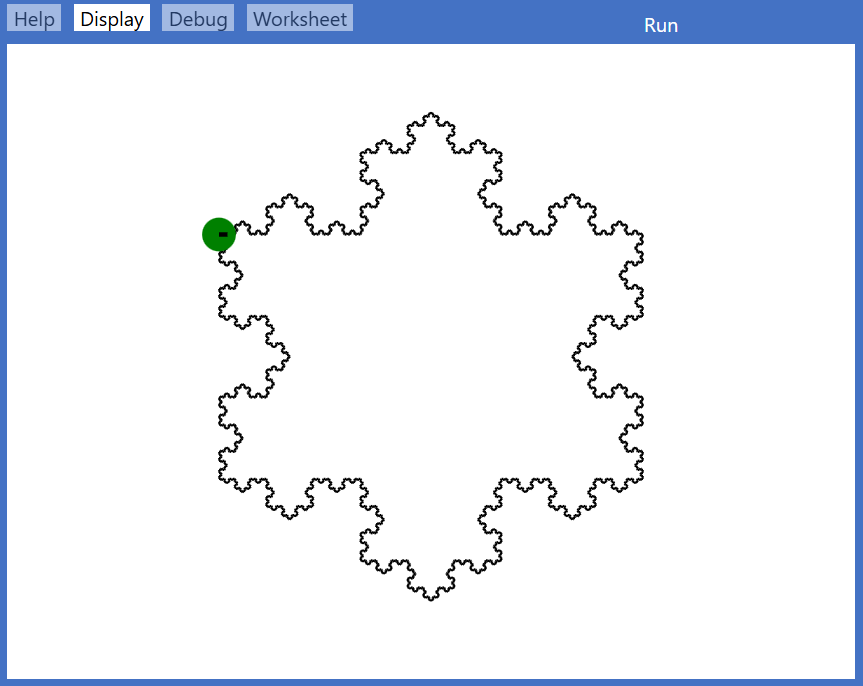
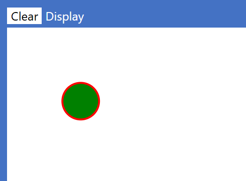

An integer is a whole number, i.e. one that has no fractional part. It may be represented in decimal, hexadecimal or binary:
100 (decimal), 0x64 (hexadecimal) and 0b1100100 all have the same value.
name of Type
examples of defining a literal value
default value
Int
let maxNumber be 10
0
Int
variable flags set to 0b1100100
0
Dot methods on an Int
function dot method
on Type
argument Types
return Type
returns
asBinary
Int
(none)
String
string of binary digits representing the argument's integer value
asString
Int
(none)
String
a string of decimal digits representing the argument's integer value
Notes
A literal integer or a named value of Type Int may
always be passed into a function or procedure that is expecting a Float.
The Int type is intended to represent whole numbers
in the range:
Maximum: 253 – 1 (which is 9007199254740991)
Minimum value: – (253 – 1)
If you go greater than the limit given above, the number will be accurate to approximately 17 decimal digits.
Larger numbers will be rounded with zeros at the end, unless they are larger than around 270, when they will automatically be shown
in exponential (scientific) format, as shown by the output from the following code:
+for ivariableName from 50expression to 100expression step 1expressioncall printTabprocedureName(0, i.asString()position, text)call printTabprocedureName(10, (2^i).asString()position, text)print expressionexpressionend for
which produces:
Floating point
A floating point number is a decimal number that may have both integer and fractional parts.
It may be written using exponential (scientific) notation, e.g.
120.0 = 1.20e2, and
0.012 = 1.20e-2.
name of Type
examples of defining a literal value
default value
Float
let phi be 1.618033988749895
0.0
Float
variable reading set to 1.1e-10
0.0
Dot methods on a Float
function dot method
on Type
argument Types
return Type
returns
asString
Float
(none)
String
a string representing the argument's floating point value
ceiling
Float
(none)
Int
the first integer larger than or equal to the argument's floating point value
floor
Float
(none)
Int
the first integer smaller than or equal to the argument's floating point value
round
Float
Int
Float
the value rounded to the number of decimal places specified in the argument
Notes
The limits on floating point numbers are:
Maximum value: just over 1.0 × 10308
Minimum value: approximately 5.0 × 10-324
A variable that has been defined as being of Type Float may not be passed as an argument into a method that requires an Int,
nor as an index into a List or an Array even if the variable contains no fractional part.
It may, however, be converted into an Int before passing, using the function floor or ceiling.
If you wish to define a variable to be of Type Float, but initialise it with an integer value, then add .0 on the end of the whole number, as in: variable hour set to 3.0
Boolean
A Boolean value is either true or false.
The keywords true and false must be written in lower case.
name of Type
examples of defining a literal value
default value
Boolean
variable done set to true
false
Dot method on a Boolean
function dot method
on Type
argument Types
return Type
returns
asString
Boolean
(none)
String
string "true" if true, "false" if false
String
A String represents text, i.e. a sequence of zero or more characters.
name of Type
examples of defining a literal value
default value
String
let title be "Ulysses"
"", (the empty string)
String
variable greeting set to "hello"
""
Notes
A String is always delineated by double quotation marks.
When typing from the keyboard into a literal string all the basic ASCII characters (0x20 to 0x7e) can be input. Similarly you can copy from
elsewhere into a literal string provided only basic ASCII characters are include. You cannot use Alt-numeric-keypad
As in most languages, strings are immutable. When you apply any operation or function with the intent of modifying an existing string, the existing string is never modified. Instead, the operation or function will return a new string that is based on the original, but with the specified differences.
Strings can be built from other strings by concatenation using the plus operator, for example
print "Hello" + " " + "World"
A newline may be inserted within a string with \n, for example:
print "Hello\nWorld"
There are no 'substring' methods in Elan because you can always use an index range to get a substring, e.g. s[3..7] gives a string containing the fourth character to the seventh character inclusive of s. Note that the upper bound of the range is exclusive.
See Indexed Value.
There are, however, many dot methods that can be applied to strings:
Dot methods on a String
function dot method
on Type
argument Types
return Type
returns
asString
String
(none)
String
the string itself
asUnicode
String
(none)
Int
the Unicode value of the first character of the string
(To convert a Unicode value into a string, use function unicode)
asRegExp
String
(none)
RegExp
a new string that is a a converted to a regular expression: no check is made of whether the result is a valid regular expression
contains
String
(none)
Boolean
true if the string contains the substring specified as the argument – false otherwise
indexOf
String
String
Int
index of the first instance of the argument (substring) within the string If it is not present, -1 is returned
isAfter
String
String
Boolean
true if alphabetic comparison finds the string comes strictly 'after' the argument string – false otherwise
isAfterOrSameAs
String
String
Boolean
true if alphabetic comparison finds the string comes 'after' or equals the argument string – false otherwise
isBefore
String
String
Boolean
true if alphabetic comparison finds the string comes strictly 'before' the argument string – false otherwise
isBeforeOrSameAs
String
String
Boolean
true if alphabetic comparison finds the string comes 'before' or equals the argument string – false otherwise
length
String
(none)
Int
the number of characters in the string
lowerCase
String
(none)
String
a new string with the original rendered in lower case
matchesRegExp
String
RegExp
Boolean
true if the string matches the regular expression – false otherwise
replace
String
String, String
String
a new string with all occurrences of the first argument string replaced by the second argument string
split
String
String
List<of String>
a List of the substrings found between occurrences of the argument string
if the argument is the empty string then the list is of all the individual characters
trim
String
(none)
String
a new string with leading and trailing spaces removed
upperCase
String
(none)
String
a new string with the original rendered in upper case
Interpolated strings
Strings are automatically interpolated, that is you can insert the values of variables or simple expressions within a string by enclosing them in braces.
For example, assuming that the variables a and b are already defined as integers:
print "{a} times {b} equals {a*b}"
prints the sentence with the values and calculated expression inserted.
If velocity and fuel are already defined as Float then:
set message to "LANDED SAFELY AT SPEED {(velocity*100).floor()} FUEL {fuel.floor()}"
updates variable message with calculated (and printable) integer values.
Special characters
You may include single quotation marks 'within a string, but not double quotation marks ". Nor can you include
the braces { or } within a literal string because of their special meanings.
Instead, you use the constants quotes, openBrace and closeBrace respectively, e.g.
print "This is a double quotation mark: " + quotes
print "Here are the curly braces: {openBrace} and {closeBrace}"
Alternatively, you can insert their Unicode (codepoint) values (in decimal or hexadecimal) by means of function unicode:
print "Here are the curly braces: {unicode(123)} and {unicode(125)}"
print "This is an ASCII double quotation mark: " + unicode(0x22)
Character Sets
Any character except quote and control characters can be used in a String.
Identifiers can only contain letters (without accents), numbers and underscore.
Tuple
A Tuple is a way of holding a small number of values of differing Types together as a single reference.
It may be considered a lightweight alternative to defining a specific class for some purposes.
Tuples are referred to as 2-tuples, 3-tuples, etc. according to the number of values they hold.
Common uses include:
Holding a pair of x,y coordinates (each of Type Float) as a single unit.
Allowing a function to pass back a result comprised of both a message in a String and a Boolean indicating whether the operation was successful.
Returning both an updated copy of an immutable data structure and the value of an element from it, e.g. from method pop on a Stack.
A Tuple differs from a List in that:
A Tuple may hold elements of different Types
A Tuple is immutable – you may read, but not modify, the values that it contains.
Defining a Tuple
A new Tuple is defined using this syntax:
let t1 be tuple(3, "apple", true)
Note that the elements may be literal or named values. An element within a Tuple may even be another Tuple.
Passing a Tuple to or from a function
You may pass a Tuple into a function, or return one from a function. The Type of a Tuple is specified
in round brackets, containing the comma-separated Types for each element in order, for example:
may be deconstructed into new variables or named values where the number of variables or names must match the number of elements in the Tuple, for example:
let x1, y1 be pointvariable x2, y2 set to pointset x2, y2 to point
The 'discard' symbol _ (underscore) may also be used when deconstructing a Tuple when there is no need to capture some of its elements:
variable x3, _ set to pointvariable _, y3 set to point
Where it is not convenient to use Tuple deconstruction (or not possible, e.g. within a lambda) then individual elements
may be accessed using the special properties item0, item1, item2,... with the dot notation,
for example:
+function distanceBetween(p1as (Float, Float), p2as (Float, Float)) returns Floatreturn sqrt((p2.item0 - p1.item0)^2 - (p2.item1 - p1.item1)^2)end function
Note that the appropriate itemNs will be listed in the Editor's drop-down menu options for the referenced Tuple.
Notes
As in most languages, an Elan Tuple is immutable. Once defined Tuples are effectively read-only. You cannot alter any of the elements in a Tuple nor (unlike a List) can you create a new Tuple from an existing one with specified differences.
You cannot deconstruct a Tuple into a mixture of new and existing variables.
Tuples may be nested: you can define a Tuple within a Tuple.
Standard (mutable) data structures
Standard (mutable) data structures
Array
Array2D
List
Dictionary
Size
Static
Static
Dynamic
Dynamic
Type form (example)
Array<of String> of Type Int, Float, String, or Boolean
Array2D<of String> of Type Int, Float, String, or Boolean
List<of String> of any Type including Array – or List for 'jagged' data
Dictionary<of String, Int> key must be Int, Float, String, Boolean, or anyrecord. Value Type may be anything
literal
n/a, but can convert literal list: ["a","b","c"].asArray()
n/a
["a","b","c"]
["a":3, "b":5]
create
new Array<of String>(10, "") any initial value of correct Type
new Array2D<of String>(5,8, "") defines 5 arrays each of 8 elements any initial value of correct Type
new List<of Int>() created empty and of any Type
new Dictionary<of String, Int>()
Key Type must be simple value or a record Value Type can be any
read by index
a[3]
a2[3, 4]
li[2]
d["b"]
read range
a[2..5] lower bound is inclusive upper bound is exclusive
n/a
li[2..5] lower bound is inclusive upper bound is exclusive
All four are 'mutable' – meaning that their contents may be changed directly by calling the various procedure dot methods that each
Type defines.
However, since procedure methods may be called only from within the main routine,
or from within another procedure, it is also possible to make changes via
function dot methods – which return a copy of the data structure,
with the specified changes – which is why all such methods have names starting with....
All four data structures contain values of a single Type, that Type being specified either explicitly – as in
<ofInt> – or implicitly if the structure
is created from its literal definition form.
A Dictionary is defined with two Types: one for its keys and one for their values.
Array
An array is a simple data structure containing n elements of a single Type, indexed from 0 to n-1.
The array elements' Type must be one of Int, Float, String, or Boolean.
As in most languages, individual elements may be referenced by their index.
To modify an element you may either
call the put procedure method, or use the
withPut function dot method.
An array's size is specified when it is created, along with the single value to which each element is initialised.
It is not possible to append further elements to an array, but you can convert an array to a list using method asList and then extend or reduce the list.
Procedure methods on an Array
procedure method
on Type
argument Types
action
put
Array
Int, item of Array element's Type
puts the item at the (integer) index position in the array
Function dot methods on an Array
function method
on Type
argument Types
return Type
returns
asList
Array
(none)
List
the contents of the Array as a List
asString
Array
(none)
String
a String that is a comma+space-separated list of the Array's elements, enclosed in square brackets
contains
Array
item of Array element's Type
Boolean
true if the Array contains the value – false otherwise
indexOf
Array
item of Array element's Type
Int
the index position of the first occurrence of the argument value in the array, or -1 if no match is found
length
Array
(none)
Int
the number of elements in the array
withPut
Array
Int, item of Array element's Type
Array
a new Array with the item at the (integer) index position
Array2D
The Array2D Type defines a 2-dimensional array of fixed size. The two
dimensions, which are specified when the array is created, may be of the same size (a square array)
or different (a rectangular array). If you want to create a 'jagged' array, you should use a List of Lists.
The convention is to refer to the position of an element in such an array by two index values
(x,y), where x is the column number and y is the row number of a rectangular grid.
The Type for the elements is also specified when the Array is defined and must be
one of: Int, Float,
String, or Boolean.
Procedure methods on an Array2D
procedure method
on Type
argument Types
action
put
Array2D
Int, Int, item of Array2D element's Type
puts the item at the (two integers) index position in the array
Function dot methods on an Array2D
function dot method
on Type
argument Types
return Type
returns
asString
Array2D
(none)
String
a String that is a comma+space-separated list of the Array2D's columns each of which contains a comma+space-separated list of row values enclosed in square brackets, the whole enclosed in square brackets
columns
Array2D
(none)
Int
the number of columns in the array (the maximum x value)
contains
Array2D
item of Array2D element's Type
Boolean
true if the Array2D contains the item – false otherwise
indexOf
Array2D
item of Array2D element's Type
Int, Int
a Tuple containing the index pair of the first occurrence of the argument's value in the array
by searching the columns in order, or (-1,-1) if no match is found
rows
Array2D
(none)
Int
the number of rows in the array (the maximum y value)
withPut
Array2D
Int, Int, item of Array2D element's Type
Array2D
a new Array2D with the item at the (two integers) index position in the array
Note
Since an Array2D has a known fixed size, methods rows and columns are of use only when passing such an array into a procedure or function that needs to discover its size.
You can read individual elements with a double index, for example:
+for colvariableName from 0expression to 7expression step 1expression+for rowvariableName from 0expression to 7expression step 1expressionprint board[col, row]expressionend forend for
List
A List is similar to an Array in that its n elements are all of one Type
and are indexed from 0 to n-1, but is more flexible because:
While the elements must all be of one Type, that Type is not limited to the simple value Types:
the element Type may also be a user-defined Type such as a class, record, another List or an Array.
A List is created either empty or initialised from a literal definition.
A List's size can be dynamically changed.
List Deconstruction
A List or ListImmutable may be deconstructed into new variables or named values in a similar way to deconstructing a Tuple, but in this case:
Always use two variable names.
Use a colon : to separate the variable names.
The first item in the list (the head) is assigned to the first variable.
The rest of the list (the tail) is assigned to the second variable. If the original list only contains one element, this will be an empty list.
Like deconstructing a Tuple, you can use an underscore _ as the variable name to discard either the head or the tail.
variable x:xs set to myList set h:t to myList set h:myList to myList
Discarding either the head or tail:
variable _:tail set to myList variable head:_ set to myList
Procedure methods on a List
procedure method
on Type
argument Types
action
append
List
item of List element's Type
the item is added to the end of the List
appendList
List
List
the argument List is added to the end of the List
insert
List
Int, item of List element's Type
the item is inserted at the index given.
If the index is negative it is counted from the end
If the index is greater than the list's length, the item is inserted at the end
prepend
List
item of List element's Type
the item is is added to the start of the List
prependList
List
List
the argument List is added to the start of the List
put
List
Int, item of List element's Type
replace the item at the given index with the new item
removeAll
List
item of List element's Type
delete all items equal to the given item
removeAt
List
Int
delete the item at the argument index
removeFirst
List
item of List element's Type
delete the first item equal to the given item
Function dot methods on a List
function dot method
on Type
argument Types
return Type
returns
asArray
List
(none)
Array
a new Array containing the same elements
asListImmutable
List whose elements are of an immutable Type
(none)
ListImmutable
a new ListImmutable containing the same elements
asSet
List
(none)
Set
a new Set containing all the unique elements in the List
asString
List
(none)
String
a String that is a comma+space-separated list of the List's elements, enclosed in square brackets
contains
List
item of List element's Type
Boolean
true if the List contains the specified element
– false otherwise
filter
List
lambda
List
a new List obtained from applying a lambda to the input List
see filter in HoFs
head
List
(none)
List element's Type
the first element of the List
indexOf
List
item of List element's Type
Int
the index of the first occurrence of the argument value in the List, or -1 if no match is found
join
List<of String>
String
String
a single String that joins all the elements in the list, with the specified String (which can be empty) inserted between the elements
length
List
(none)
Int
the number of elements in the List
map
List
lambda
List
a new List obtained from applying a lambda to the input List
see map in HoFs
maxFloat
(not a dot method)
List<of Float>
Float
the maximum value found in the List
minFloat
(not a dot method)
List<of Float>
Float
the minimum value found in the List
maxInt
(not a dot method)
List<of Int>
Int
the maximum value found in the List
minInt
(not a dot method)
List<of Int>
Int
the minimum value found in the List
maxBy
List
lambda
List element's Type
the list element corresponding to the maximum of the values returned by a lambda
see maxBy in HoFs
minBy
List
lambda
List element's Type
the list element corresponding to the minimum of the values returned by a lambda
see minBy in HoFs
reduce
List
item of List element's Type, lambda
return type of lambda
the final value obtained by applying a lambda cumulatively to each element in the input List
taking account of the first argument as an initial (and default return) value
see reduce in HoFs
sortBy
List
lambda
List
a new list with the elements sorted according to the value returned by a lambda
see sortBy in HoFs
withAppend
List
item of List element's Type
List
a new List lengthened with the item added after the end
withAppendList
List
List of same Type
List
a new List lengthened by appending the given List
withInsert
List
Int, item of List element's Type
List
a new List with the item inserted after the element at the given index position
withPrepend
List
item of List element's Type
List
a new List lengthened with the item added before the beginning
withPrependList
List
List of same Type
List
a new List lengthened by prepending the given List
withPut
List
Int, item of List element's Type
List
a new List with the item replacing that at the given index
withRemoveAll
List
item of List element's Type
List
a new List with items equal to the given item removed
withRemoveAt
List
Int
List
a new List with the item at the given index removed
withRemoveFirst
List
item of List element's Type
List
a new List with the first item equal to the given item removed
Dictionary
A Dictionary works like an Array, but instead of having a numeric (integer) index, each entry has a key. Each key is associated with a value,
so the Dictionary is a set of key:value pairs.
The key's Type must be one of Int, Float, String or Boolean,
or it may be a user-defined record. The values may be of any Type, and the Types of both key and value are fixed when the Dictionary is created.
Procedure methods on a Dictionary
procedure method
on Type
argument Types
action
put
Dictionary
key's Type, value's Type
replace the value at an existing key, or add a key:value pair
removeAt
Dictionary
key's Type
delete the key:pair at the given key (if it exists)
Function dot methods on a Dictionary
function dot method
on Type
argument Types
return Type
returns
asDictionaryImmutable
Dictionary
(none)
DictionaryImmutable
a new DictionaryImmutable with the same contents as the Dictionary
asString
Dictionary
(none)
String
a string that is a comma+space-separated list of the Dictionary's key:value pairs, enclosed in square brackets
hasKey
Dictionary
item of Dictionary key's Type
Boolean
true if the Dictionary contains the given key – false otherwise
keys
Dictionary
(none)
List
a List containing the keys
values
Dictionary
(none)
List
a List containing the values
withPut
Dictionary
item of Dictionary key's Type, item of Dictionary value's Type
Dictionary
a new Dictionary with the value replacing what was at the specified key
withRemoveAt
Dictionary
item of Dictionary key's Type
Dictionary
a new Dictionary with the key:value pair removed from the specified key
Immutable data structures
In contrast to the standard (mutable) data structures, immutable
data structures cannot be modified directly – and hence define no procedure dot methods. Instead,
changes are made by using function dot methods that copy the existing data structure, but with specified
differences. Immutable data structures are intended specifically to facilitate the Functional Programming paradigm,
but some are also useful within other programming paradigms.
The five immutable data structures defined in the Elan library are summarised in this table. More details on each Type are given below the table.
Immutable data structures
ListImmutable
DictionaryImmutable
Set
Stack
Queue
Size
Dynamic
Dynamic
Dynamic
Dynamic
Dynamic
Type
ListImmutable<of String> element Type must be immutable
DictionaryImmutable<of String, Int> Key Type must be Int, Float, String, Boolean or any record Value Type may be any immutable Type
Set<of String> element Type must be immutable
Stack<of String> element Type must be immutable
Queue<of String> element Type must be immutable
literal
{a","b","c"}
{"a":3, "b":5}
None, but can convert literal list: ["a","b","c"].asSet()
None
None
create
new ListImmutable<of String>() created empty must be 'of' an immutable Type
new DictionaryImmutable<of String, Int>() created empty Key and Value Types must be immutable
new Set<of String>() created empty must be 'of' an immutable Type
A ListImmutable is like a List but is immutable (like a String).
You can still insert, delete or change elements in a ListImmutable, but the methods for these operations do not modify the input ListImmutable: they return a new ListImmutable based on the input ListImmutable with the specified differences.
Type name
The Type is specified in the following ways:
ListImmutable<of String> for a ListImmutable of Type String
ListImmutable<of Int> for a ListImmutable of Type Int
ListImmutable<of ListImmutable<of Int>> for a ListImmutable of such lists each of Type Int
Creating a ListImmutable
A ListImmutable may be defined in 'literal' form, delimited by curly brace with all the required elements separated by commas. The elements may be literal values but must all be of the same Type, for example:
variable fruit set to {"apple", "orange", "pear"}
ListImmutable Deconstruction
A ListImmutable can be deconstructed just like a List, using a colon : to separate two variable names.
set h:t to myListImmutable
Function dot methods on a ListImmutable
function dot method
on Type
argument Types
return Type
returns
asList
ListImmutable
(none)
List
a new List with the same contents as the ListImmutable
asSet
ListImmutable
(none)
Set
a new Set containing all the unique elements in the List
asString
ListImmutable
(none)
String
a string that is a comma+space-separated list of the List's elements, enclosed in braces
contains
ListImmutable
item of List element's Type
Boolean
true if the List contains the item – false otherwise
head
ListImmutable
(none)
item of List element's Type
the first item in the List
indexOf
ListImmutable
item of List element's Type
Int
index of the first occurrence of the argument value in the List, or -1 if no match is found
length
ListImmutable
(none)
Int
the number of elements in the List
withInsert
ListImmutable
Int, item of List element's Type
ListImmutable
a new ListImmutable with the item inserted at the specified position
withPut
ListImmutable
Int, item of List element's Type
ListImmutable
a new ListImmutable with the item replacing what was at specified position
withRemoveAt
ListImmutable
Int
ListImmutable
a new ListImmutable with the item at the specified position removed
withRemoveFirst
ListImmutable
item of List element's Type
ListImmutable
a new ListImmutable with the first occurrence of the item removed
withRemoveAll
ListImmutable
item of List element's Type
ListImmutable
a new ListImmutable with all occurrences of the item removed
Try these examples:
# reusing variable fruit for each new ListImmutablecommentvariable fruitname set to emptyListImmutable<ofString>expressionprint fruitexpressionset fruitvariableName to fruit.withAppend("apple")expressionset fruitvariableName to fruit.withAppend("pear")expressionprint fruitexpressionprint fruit[1]expressionprint fruit.length()expressionprint fruit[fruit.length() - 2]expressionprint fruit.contains("banana")expression
DictionaryImmutable
A DictionaryImmutable is like a Dictionary but immutable
(like a String). You can still insert, delete or change elements in a DictionaryImmutable,
but the methods of these operations do not modify the input DictionaryImmutable: they return a new
DictionaryImmutable with the specified differences.
A DictionaryImmutable may be defined in a constant.
Type name
In the following example, the keys are of Type String, and the values associated with the keys are of Type Int:
DictionaryImmutable<of String, Int>
Defining a literal DictionaryImmutable
A literal DictionaryImmutable is defined as a comma-separated list of key:value pairs surrounded by curly braces:
variable scrabbleValues set to {"a":1, "b":3, "c":3, "d":2}
Using an Immutable Dictionary
Try this example:
variable immDname set to newDictionaryImmutable<ofString, Int>()expressionprint immDexpressionset immDvariableName to immD.withPut("a", 3)expressionprint immD["a"]expressionset immDvariableName to immD.withRemoveAt("a")expressionprint immDexpression
Function dot methods on a DictionaryImmutable
function dot method
on Type
argument Types
return Type
returns
asString
DictionaryImmutable
(none)
String
a string that is a comma+space-separated list of the DictionaryImmutable's key:value pairs, enclosed in braces
hasKey
DictionaryImmutable
item of DictionaryImmutable key's Type
Boolean
true if the DictionaryImmutable contains the given key – false otherwise
withPut
DictionaryImmutable
item of DictionaryImmutable key's Type, item of DictionaryImmutable value's Type
DictionaryImmutable
a new DictionaryImmutable with the value replacing what was at the specified key
withRemoveAt
DictionaryImmutable
item of DictionaryImmutable key's Type
DictionaryImmutable
a new DictionaryImmutable with the key:value pair removed from the specified key
Set
A set is a standard data structure that works somewhat like a ListImmutable with the important difference that in a set a given element may appear only once. If an item being added to a Set is identical to an existing item in the Set then the Set remains the same length as before.
This enables a set to work like a mathematical set so that it is possible to perform standard set operations such as union or intersection. For the same reason, a Set is an immutable data structure: there are no methods that modify the set on which they are called, but several of them (including add, remove) return a new set that is based on the original set or sets, with specified differences.
Example of use:
variable stname set to newSet<ofInt>()expressionset stvariableName to st.addFromList([3, 5, 7])expressionprint st.length()expressionset stvariableName to st.add(7)expressionprint st.length()expressionset stvariableName to st.remove(3)expressionprint st.length()expressionset stvariableName to st.remove(3)expressionprint st.length()expressionprint stexpression
Notes
When creating a set, the Type of the elements must be specified in the form
Set<of String>. This applies both when creating a new, empty set and when defining the Type of a parameter to be a Set.
You can add elements: individually with add, or multiple elements with addFromList.
You can create a new set from an existing list or ListImmutable by calling asSet on it.
Function dot methods on a Set
function dot method
on Type
argument Types
return Type
returns
add
Set
item of Set element's Type
Set
a new Set extended with the item, provided it differs from all the Set's current elements
addFromList
Set
List
Set
a new Set extended with those items from the List that are not already in the Set
asList
Set
(none)
List
a List containing the Set's elements
asString
Set
(none)
String
a string that is a comma+space-separated list of the Set's elements, enclosed in braces
contains
Set
item of Set element's Type
Boolean
true if the Set contains the item – false otherwise
difference
Set
Set
Set
a Set containing those elements of the Set that do not occur in the argument Set
intersection
Set
Set
Set
a Set containing those elements common to both the Set and the argument Set
isDisjointFrom
Set
Set
Boolean
true if the Set has no items in common with the argument Set – false otherwise
isSubsetOf
Set
Set
Boolean
true if all the Set's items are also in the argument Set – false otherwise
isSupersetOf
Set
Set
Boolean
true if the Set contains all the items that are in the argument Set – false otherwise
length
Set
(none)
Int
the number of elements in the Set
remove
Set
item of Set element's Type
Set
a new Set with the argument item removed (if present)
union
Set
Set
Set
a Set containing all the unique elements of the Set and the argument Set (i.e. no duplicates)
Stack and Queue
Stack and Queue are similar data structures except that Stack is ‘LIFO’ (last in, first out), while Queue is FIFO (first in, first out). The names of the methods for adding/removing are different, but there are also common methods.
Both a Stack and a Queue are defined with the Type of the items that they can contain, similarly to how List and ListImmutable have a specified item Type, though with different syntax. The Type is specified in the form shown below e.g. Stack<of String>, Queue<of Int>, Stack<of (Float, Float)>, Queue<of Square>.
Both Stack and Queue are dynamically extensible, like List and ListImmutable. There is no need (or means) to specify a size limit as they will continue to expand until, eventually, the computer’s memory limit is reached.
This same syntax is used to specify the Type if you want to pass a Stack or Queue into a function, or specify it as the return Type.
Stack and Queue have two methods in common: length and peek.
peek returns the next item to be removed, without actually removing it.
The methods for adding and removing an item are different for Stack and Queue, as shown here:
Function dot methods on a Stack
function dot method
on Type
argument Types
return Types
returns
push
Stack
item of Stack element's Type
Stack
the Stack with the element added to the top of the Stack
pop
Stack
(none)
Stack element Type, Stack
the topmost element of the Stack, and the Stack with the element removed
peek
Stack
(none)
Stack element Type
the topmost element of the Stack (without altering the Stack)
length
Stack
(none)
Int
the number of elements in the Stack
asString
Stack
(none)
String
a string that is a comma+space-separated list of the Stack's elements, enclosed in square brackets,
last element pushed listed first
Function dot methods on a Queue
function dot method
on Type
argument Types
return Types
returns
enqueue
Queue
item of Queue element's Type
Queue
the Queue with the element added to the end of the Queue
dequeue
Queue
(none)
Queue element Type, Queue
the next element of the Queue, and the Queue with the element removed
peek
Queue
(none)
Queue element Type
the next element of the Queue (without altering the Queue)
length
Queue
(none)
Int
the number of elements in the Queue
asString
Queue
(none)
String
a string that is a comma+space-separated list of the Queue's elements, enclosed in square brackets,
first element enqueued listed first
Example use of a Stack:
variable stname set to newStack<ofString>()expressionprint st.length()expressionset stvariableName to st.push("apple")expressionset stvariableName to st.push("Pear")expressionprint st.length()expressionprint st.peek()expressionvariable fruitname set to ""expressionset fruit, stvariableName to st.pop()expressionprint fruitexpressionset fruit, stvariableName to st.pop()expressionprint fruitexpressionprint st.length()expression
Example use of a Queue:
variable quname set to newQueue<ofString>()expressionprint qu.length()expressionset quvariableName to qu.enqueue("apple")expressionset quvariableName to qu.enqueue("Pear")expressionprint qu.length()expressionprint qu.peek()expressionvariable fruitname set to ""expressionset fruit, quvariableName to qu.dequeue()expressionprint fruitexpressionset fruit, quvariableName to qu.dequeue()expressionprint fruitexpressionprint qu.length()expression
Common dot methods
Dot methods that work on more than one fundamental Type
Although all applicable methods are described in earlier sections under each Type, this table lists those which are applicable to several Types.
Click on a Type to go to the Type's dot methods, or on the ✔ tick to go to the specific method on that Type.
The method asString is so widely applicable because it enables you to print
most variables and data structures to the Display for debugging purposes.
The length of a Dictionary or DictionaryImmutable can be found by applying method length to the list returned by method keys on the dictionary:
print dict.keys().length() ▶ 15
Checking whether an item is contained in a Dictionary or DictionaryImmutable can be
done by applying method contains to the list returned by methods keys and values on the dictionary:
print dict.keys().contains(42) ▶ true or false
print dict.values().contains("widget") ▶ true or false
Input/output
Reading keys ‘on the fly’
In some applications – especially in games, for example – you want the program to react to a key pressed by the user, but without holding up the program to wait for value to be input.
Whether your application makes use graphics, or just uses the Console for text, reading keystrokes ‘on the fly’ is done via one of two methods:
let key1 be getKey()let key2, modifier be getKeyWithModifier()
Notes
When the getKey function is called, the system does not wait for a response. If a key has been pressed then that will be returned as a String e.g. "a".
Non-printable keys will be returned in the form: "Backspace","Enter","ArrowDown",..
If no key has been pressed (since the last time the method was called), it will return the empty string "".
Pressing just the Shift, Ctrl (Cmd under macOS), or Alt keys will not be detected by getKey. To read those keys use…
getKeyWithModifier which returns a 2-tuple containing the key pressed plus any ‘modifier’ key such a Shift, Ctrl, or Alt (or the empty string if no modifier key is pressed).
Both of these getKey methods are System methods because they have a dependency on the system and so may only be used within a procedure or in main.
Use the procedure method clearKeyBuffer() if you want to enforce that the user cannot get too far ahead of the program by hitting keys in very rapid succession.
waitForKey waits for a key to be pressed, and returns it. pressAnyKeyToContinue gives an optional prompt and is used when you don't need to know which key was pressed.
maincall pressAnyKeyToContinue(true)print "OK, press A or B"let mykey be waitForKey()print "That was {mykey}"end main
Reading Text Files
The TextFileReader class is used to read textual data from a file.
An instance is created by the standalone system method openFileForReading.
The available procedure methods are:
procedure method
argument Type
action
openFileForReading
(none)
opens a file system dialog to choose the filename to be read, which must have the filetype .txt
and returns a file handle
readLine
(none)
reads the next substring from the file that is terminated with a newline
readWholeFile
(none)
reads the whole file and closes the file
endOfFile
(none)
returns true after the last line has been read
– otherwise false
close
(none)
closes the file
These methods may be used to read a whole file in one go:
let filename be openFileForReading()expressionlet textname be file.readWholeFile()expressionprint textexpression
or to read a file line by line:
let filename be openFileForReading()expressionvariable linesname set to emptyList<ofString>expression+while notfile.endOfFile()conditionlet linename be file.readLine()expressioncall lines.appendprocedureName(linearguments)end whilecall file.closeprocedureName(arguments)
Notes
openFileForReading will present the user with a dialog to select the file.
readWholeFile returns a String containing every character in the file, without any trimming. It automatically closes the file after the read.
readLine reads as far as the next newline character (\n) and then automatically trims the line to remove any spaces and/or carriage-returns (which some file systems insert after the newline automatically) from the resulting line returned as a String. If this behaviour is not desired, you can use readWholeFile, which does no trimming, and then parse the resulting String into separate lines.
Calling file.close after reading line by line is strongly recommended to avoid any risk of leaving the file locked. It is not necessary to call it after using readWholeFile because that method automatically closes the file.
Calling any method on a file that is already closed will result in a runtime error.
Writing text files
The TextFileWriter class is used to write textual data to a file.
An instance is created by the standalone system method createFileForWriting.
The available procedure methods are:
procedure method
argument Type
action
creatFileForWriting
String
sets up a buffer for the data to be output, and specifies a filename (or the empty string)
with or without the default filetype of .txt
and returns a file handle
writeLine
String
writes the string to the buffer
writeWholeFile
String
writes the string to the buffer and then outputs the buffer to the file system
saveAndClose
String
writes the buffer to the file system
These methods may be used to write a whole file in one go:
let fname be createFileForWriting("myFile.txt")expressioncall f.writeWholeFileprocedureName("this is\nmyText"arguments)
or to write a file line by line:
let filename be createFileForWriting("squares.txt")expression+for ivariableName from 1expression to 100expression step 1expressioncall file.writeLineprocedureName("{i}{i*i}"arguments)end forcall file.saveAndCloseprocedureName(arguments)
Notes
writeLine adds the string it is passed onto the end of any data previously written, with a newline character (\n) automatically appended.
When execution reaches saveAndClose you will be presented with a dialog to confirm (or edit) the given filename and location where it is to be saved. It is not therefore strictly necessary to specify a filename when creating the file, since it can be specified by the user in the dialog so, in that case, you might put the empty string "" into the parameter of createFileForWriting.
writeWholeFile puts the string it is given into the file and then automatically saves the file, so the user will be presented with the same dialog as if saveAndClose had been called.
Calling any method on a file that has already been closed (by calling either saveAndClose or by writeWholeFile) will result in a runtime error.
If the user were to hit Cancel on the save dialog, then the program will exit with an error. If you want to guard against this possibility (if, for example, it might mean the loss of important data) then you should perform the save and close within a try..catch like this:
+try call file.saveAndCloseprocedureName(arguments)+catch exception in evariableNameprint "File save cancelled"expressionend try
or you could make the code offer the user options: to save again, or to continue without saving.
Displaying Html
If you attempt to embed Html in a string and then attempt to print it, you will see the string displayed literally - the Html tags
will not be recognised - this is for security reasons. However, it is possible to display formatted Html on the Display.
The following code:
This Html forms another 'layer' of the Display. Any plain text that you print
(using print or any of the print... procedures)
will be overlaid on top of this.
You can programmatically clear just the Html display using the procedure clearHtml.
For specifying style or other attributes within Html tags, the attribute values should be enclosed in single quotation marks ' as shown above.
Html will recognise single or double quotation marks, but entering double quotation marks would terminate the Elan string.
Alternatively, you could use the constant quotes within braces as an interpolated field.
Using an embedded CSS stylesheet
You can also specify a style tag at the start of your Html string, to apply to the whole Html being displayed:
let stylename be "<style> h1 {openBrace} color: DarkRed; font-size: 24pt; {closeBrace} p {openBrace} font-family: Serif;{closeBrace} </style>"expressioncall displayHtmlprocedureName("{style}<h1>New heading</h1><p>some new text</p>"arguments)
producing this result:

Displaying images
Printing an image on the Display
An image that can be accessed via a URL may be printed on the display using the image keyword
followed by the URL. Here, the URL is not bounded by quotes:
print expression
As soon as you leave the field the text will change to show a thumbnail copy of the image:
print expression
If you edit the field again, the keyword and URL will be shown.
Acknowledgement: The idea of displaying an image value as a thumbnail within the code was inspired by
a similar feature in the language Strype. We are
grateful to Prof. Michael Kölling and the team at King's College, London responsible for Strype,
who showed us this feature in confidence before its release, but nonetheless generously allowed us to mimic it in Elan.
When the code is run the image will be printed on the Display, but still thumbnail sized.
You can specify dimensions by using a with clause like this:
print expression
The with clause also permits you to specify a title for the image, which shows up as a tooltip on the image. It is good practice to do this for meeting accessibility guidelines.The with clause
also offers position properties x and y. These are ignored when printing an image, but are required in the context of drawing Vector Graphics.
An image specified in this way may also be assigned to a named value, or defined inline as an argument to a method, for example:
let sharkname be expression
The Type of a named value that holds an image is ImageVG – the 'VG' indicating that
this Type is compatible with vector graphics, so an image may be added to a List<ofVectorGraphic> or displayed directly by:
In this usage the position may be controlled by specifying the x and y coordinates for the top left corner.
It is also possible to instantiate an ImageVG explicitly, but in this case you must provide
the URL as a String, either as a literal (by surrounding it with quotes) or as a named value, for example:
let urlname be "https://upload.wikimedia.org/wikipedia/commons/0/08/Corl0207_%2828225976491%29.jpg"expressionlet img1name be newImageVG(url)expressionprint img1expression
Various properties can be set on an ImageVG using a with clause, for example:
let urlname be "https://upload.wikimedia.org/wikipedia/commons/0/08/Corl0207_%2828225976491%29.jpg"expressionlet img1name be newImageVG(url) with alt set to "shark"expression
The tone procedure allows the generation of a simple tone. It requires three arguments to be provided:
the duration of the generated tone specified in milliseconds (Int)
the frequency of the generated tone in Hertz (Int)
the volume of the tone (Float)
Note that the volume paramater is only relative in that the actual volume will be modified by the various sound settings on the output device, and may even be muted.
An example that plays a C major scale:
let scale be [262, 294, 330, 349, 392, 440, 494, 523]let quaver be 250let volume be 1.5+for i from 0 to scale.length() - 1 step 1call tone(quaver, scale[i], volume)end for
Graphics
Block graphics
Block graphics provides a simple way to create low resolution graphics, ideal for simple but engaging games for example.
The graphics are displayed on a grid that is 40 blocks wide by 30 blocks high.
Each block is be rendered as a solid colour.
An example of block graphics to produce a rapidly changing pattern of coloured blocks:
variable blocks set to newArray2D<ofInt>(40, 30, white)+while truelet x be randomInt(0, 39)let y be randomInt(0, 29)let colour be randomInt(0, white - 1)call blocks.put(x, y, colour)call displayBlocks(blocks)end while
Notes
The Array2D must be of TypeInt and of size 40 x 30.
You may create multiple Array2Ds holding different patterns of blocks, and switch between them
just by passing the required one as the argument to the displayBlocks method.
A colour is specified as an Int, as described under Colours.
Turtle graphics
Turtle graphics are implemented in Elan with output to the Display pane on in the user interface, i.e. the 'paper' on which the Turtle draws.
The area is 200 turtle units wide by 150 turtle units high, and both integer and floating point values of turtle units can be used.
The origin for turtle units (0,0) is at the centre of the area: positive x rightwards, positive y upwards.
So for example the top left corner of the display is at (-100,75).
Procedure methods on a Turtle
procedure method
on Type
argument Types
action
clearAndReset
Turtle
(none)
clears the turtle display and moves the turtle to its starting position and direction
hide
Turtle
(none)
makes the turtle invisible in the display
move
Turtle
Int or Float
moves the turtle the specified number of turtle units in the direction it is facing or, if negative, in the opposite direction
moveTo
Turtle
Int or Float, Int or Float
moves to the x,y position specified; this is unlike "move" which moves relative to the current position and orientation; it draws a line if the pen is down, unlike placeAt
penColour
Turtle
Int
changes the colour of its path in the display to the literal or named value specified
penDown
Turtle
(none)
makes the turtle's subsequent moves leave a trace of its path in the display
penUp
Turtle
(none)
makes the turtle's subsequent moves leave no trace of its path in the display
penWidth
Turtle
Int or Float
changes the width of the line tracing the turtle's path in the display default, and minimum, is 1
placeAt
Turtle
Int or Float, Int or Float
places or repositions the turtle at the x,y position specified
show
Turtle
(none)
makes the turtle visible in the display as a green blob marked with a black radius that indicates the direction it is facing
turn
Turtle
Int or Float
turns the turtle through the specified number of degrees clockwise or, if negative, anticlockwise
turnToHeading
Turtle
Int or Float
turns the turtle to face in the direction specified in degrees where 0 is upward and increasing values go clockwise from there
Properties of a Turtle
Property
name
Type
description
default
heading
Float
the direction in which the turtle is pointing in degrees clockwise from North
0.0 degrees, i.e. upward in the Display
x
Float
the x-coordinate of the turtle's current position
0.0
y
Float
the y-coordinate of the turtle's current position
0.0
Example:
let t be newTurtle()call t.placeAt(-75, 50)call t.show()+for i from 1 to 4 step 1call t.turn(90)call t.move(80)call pause(500)end for
Output:
Notes
If the turtle is placed or moved outside the 200 × 150 area boundary, it will not cause an error,
but the location of the turtle and any lines outside the boundary will not be visible.
You can move and turn the turtle, causing lines to be drawn, whether or not the turtle is shown.
The current location and heading of the turtle may be read using the properties
x, y, and heading.
The turtle starts facing upwards (heading 0), so that move moves in the y-direction.
Here is a more sophisticated example, using a procedure and recursion, that produces a fractal snowflake:
+mainlet t be newTurtle()call t.placeAt(-50, 30)call t.turn(90)+for i from 1 to 3 step 1call drawSide(side, t)call t.turn(120)end forend main+procedure drawSide(lengthasFloat, tasTurtle)+if (length > 1) thenlet third be length/3call drawSide(third, t)call t.turn(-60)call drawSide(third, t)call t.turn(120)call drawSide(third, t)call t.turn(-60)call drawSide(third, t)else call t.move(length)end ifend procedure+constant side set to 100

Vector graphics
Vector graphics are implemented in Elan using the SVG (Scalable Vector Graphics) element that is part of the Html specification.
The names of the shapes broadly correspond to the names of SVG tags:
CircleVG for <circle../>
LineVG for <line../>
RectangleVG for <rect../>
ImageVG for <image../>
The properties of the Elan shapes reflect the names of the attributes used in the SVG tags but some differ. For example, SVG's stroke-width
is set with property strokeWidth, to make it a valid Elan Identifier.
Also stroke and fill are set by the properties strokeColour and fillColour.
Vector graphics are output to the Display pane in the user interface.
The area is 100 units wide by 75 units high, and both integer and floating point values of the units can be used.
The origin for SVG units (0,0) is a the top left corner of the display: positive x rightwards, positive y downwards.
So for exxample the centre of the display is at (50, 37.5).
As with using SVG from Html, the shapes are drawn in the order in which they are added to the VectorGraphic instance:
later shapes are positioned over earlier ones.
A set of SVG shapes is defined in either a List<ofVectorGraphic> or a List of any specific Type of VectorGraphic (such as CircleVG) by using the List append method,
and the assembled list is then displayed by a call to procedure displayVectorGraphics with the List as its argument. Examples
are shown below the table of properties.
Properties of Vector graphic shapes
Property
Vector graphic shape
Property
name
Type
CircleVG
ImageVG
LineVG
RectangleVG
description
default
alt
String
✔
alternate textual description (for accessibility)
empty string
centreX
Float
✔
horizontal position of circle centre
37.5
centreY
Float
✔
vertical position of circle centre
50
fillColour
Int
✔
✔
colour to fill the shape
yellow
height
Float
✔ see note
✔
height to render the shape or the image
Rectangle: 20
radius
Float
✔
radius of circle
10
strokeColour
Int
✔
✔
✔
colour of the strokes in the shape
black
strokeWidth
Int
✔
✔
✔
width of the strokes in the shape
1
title
Float
✔
title text
empty string
url
String
✔
URL of the image to be displayed
empty string
width
Float
✔ see note
✔
width to render the shape or the image
Rectanlge: 40
x, y
Float, Float
✔ ✔
✔ ✔
image's x,y position from top left
Rectangle: 10, 10
x1, y1
Float, Float
✔ ✔
line's starting x,y position from top left
0, 0
x2, y2
Float, Float
✔ ✔
line's ending x,y position from top left
0, 0
Note
The height and width of an image are dependent upon the dimensions of the original graphic file.
Example of a circle with a coloured circumference:
variable vgname set to newList<ofVectorGraphic>()expressionlet circname be newCircleVG() with centreX set to 20, centreY set to 20, radius set to 5, fillColour set to red, strokeColour set to green, strokeWidth set to 2expressioncall vg.appendprocedureName(circarguments)call displayVectorGraphicsprocedureName(vgarguments)

Example of a circle that changes between red and green every second:
variable vgname set to newList<ofVectorGraphic>()expressionlet circname be newCircleVG() with centreX set to 50, centreY set to 37, radius set to 30, fillColour set to greenexpressioncall vg.appendprocedureName(circarguments)+while trueconditioncall displayVectorGraphicsprocedureName(vgarguments)call pauseprocedureName(700arguments)call circ.setFillColourprocedureName(redarguments)call displayVectorGraphicsprocedureName(vgarguments)call pauseprocedureName(700arguments)call circ.setFillColourprocedureName(greenarguments)end while
Notes
The constructor for each VG Type requires arguments corresponding to the Html attributes for the corresponding SVG Type.
As with Block graphics the display is not updated until the displayVectorGraphics method is called,
allowing you to make multiple changes before updating the display. Similarly, the method to add a shape returns a new instance of the VectorGraphics which must be assigned either to an existing variable, or to a new let.
The fillColour and strokeColour properties may be specified as described under Colours.
The fillColour only may also be specified as transparent (which has the value -1).
VectorGraphic is the abstract superclass of all ...VG shapes. You use it if you want to define a List holding different types of shape.
To make it easier for simple programs, the VectorGraphic shapes all have default values for their properties, and you only have to specify the ones that you want to differ.
So the constructors do not take any properties, and instead you add a with clause listing those properties which you want to have different values. See New instance for more about with clauses.
Individual properties of any of the VG Types may be modified by calling the corresponding set... procedure method
or, if working within a function, by using the corresponding with... function dot method, for example setCentreX or withCentreX.
Combining graphic outputs
Program outputs, whether text or graphical, can be combined in the Display. In particular, Block graphics and text or Html printing can share the Display
along with either Vector graphics or Turtle graphics (but not both).
If you want to share the Display in this way, remember that both text and Html print outputs appear sequentially down the Display (which can be scrolled), whereas the graphic outputs are positioned in the Display using their own absolute coordinate systems.
The order in which the outputs are displayed (and therefore overwrite) is:
Block graphics
Vector or Turtle graphics
Printed text or Html
So some care is needed to manage the layout in the Display.
Note that, while vector graphics are being drawn, printed text that exceeds the height of the display does not scroll until the graphic completes.
Other Types
Random
Generating random numbers within a function
It is not possible to use the system methods random() or randomInt() within a function because they create unseen side effects. You may use those system methods outside the function and pass the resulting random number (as an Int or a Float) as an argument into a function.
It is possible to create and use random numbers within a function, but it requires a different approach and is a little more complex, using a special Type named Random (note that the R is in upper-case), as in this example:
mainvariable rnd set to newRandom()call rnd.initialiseFromClock()variable dice set to 0for i from 1 to 10 step 1set dice, rnd to rollDice(rnd)print diceend forend mainfunction rollDice(rndasRandom) returns (Int, Random)return rnd.nextInt(1, 6)end function
The Random Type defines two ‘function methods’: next and nextInt.
Both of them return a 2-Tuple consisting of the random value (as either a Float or an Int respectively) plus a new Random. The new (returned) Random must be used for generating the subsequent random number (if more are required). If you call next repeatedly on the same instance of Random, you will always get the same value.
As shown in the example, when first created you should call initialiseWithClock() on it. If you remove that call statement from the code above, the program will still generate a sequence of randomised values, but the sequence will be exactly the same each time you run the program. Initialising from the clock ensures that you get a different sequence each run. Using Random without so initialising, however, can be extremely useful for testing purposes since the results are repeatable.
Func
A function may be passed as an argument into another function (or a procedure), or returned as the result of calling another function.
This pattern is known as Higher-order Function (HoF), and is a key idea in the Functional Programming.
To define a function that takes in another function as a parameter, or returns a function, you need to specify the Type of the function,
just as you would specify the Type of every parameter and the return Type for the function.
Type name
The Type of any function starts with the word Func followed by angle brackets defining the Type of each parameter,
and the return Type for that function, following this syntax:
Func<of String, String, Int => Boolean>
This example defines the Type for a function that defines three parameters of Type String, String, and Int respectively, and returns a Boolean value. This Type would match that of a function definition that started:
A colour is specified as an Int value using one of these methods:
the limited colours defined as library constants as in the above table.
an integer in the decimal range 0 (black) to 224-1 (white).
a six digit hexadecimal value in the range 0x000000 – 0xffffff
using the same 'RGB' format as used in Html style, for example 0xff0000 for red.
Standalone functions
Standalone library functions always return a value and are therefore used in contexts that expect a value, such as in the right-hand side of a variable declaration or a set assignment, either on their own or within a more complex expression. All standalone library functions require at least one argument to be passed in brackets, corresponding to the parameters defined for that function.
unicode
Function unicode converts a Unicode (codepoint) value expressed as an integer value in decimal or hexadecimal notation, or as any expression evaluating to an Int, into a string of a single character. For example:
+function heartsname(parameter definitions) returns StringTypereturn unicode(0x2665)expressionend function
parseAsInt and parseAsFloat
Function parseAsInt attempts to parse the input String as an Int, and returns a 2-tuple, the first value of which is Boolean, with true indicating whether or not the parse has succeeded, and the second value being the resulting Int.
parseAsFloat does the equivalent for floating point. Operation is illustrated by these tests:
+test optional descriptionassert parseAsInt("31")computed value is tuple(true, 31)expected valuepassassert parseAsInt("0")computed value is tuple(true, 0)expected valuepassassert parseAsInt("thirty one")computed value is tuple(false, 0)expected valuepassassert parseAsInt("3.1")computed value is tuple(false, 0)expected valuepassassert parseAsFloat("31")computed value is tuple(true, 31)expected valuepassassert parseAsFloat("0")computed value is tuple(true, 0)expected valuepassassert parseAsFloat("3.1")computed value is tuple(true, 3.1)expected valuepassend test
Notes
Any string that parses as an Int will also parse as a Float.
If the parse fails, the second value will become zero, so you should always check the first value to see if the second value is a correct parse or just the default.
You can 'deconstruct' the Tuple into two variables:
variable success, parsedValuename set to parseAsInt(myString)
One use of these parsing methods is for validating user input, but note that an easier way to do this is to use the various input methods.
floor, ceiling, round, isNaN, and IsInfinite
All of these functions are called as 'dot methods' on a numeric value of Type Float or Int.
NaN is short for 'Not A (Real) Number' Their use is illustrated with the following tests:
+test optional descriptionlet nname be 3.14159expressionassert n.floor()computed value is 3expected valuepassassert n.ceiling()computed value is 4expected valuepassassert n.round(3)computed value is 3.142expected valuepassassert sqrt(-1).isNaN()computed value is trueexpected valuepasslet xname be 1/0expressionassert x.isInfinite()computed value is trueexpected valuepassend test
Maths functions
All the maths functions take a Float argument and return a Float value.
function
argument Type
input unit
returns
output unit
abs
Float
absolute value of the input
acos
Float
arccosine of the input
radians
asin
Float
arcsine of the input
radians
atan
Float
arctangent of the input
radians
acosDeg
Float
arccosine of the input
degrees
asinDeg
Float
arcsine of the input
degrees
atanDeg
Float
arctangent of the input
degrees
cos
Float
radians
cosine of the input
cosDeg
Float
degrees
cosine of the input
exp
Float
𝑒𝑥 where 𝑥 is the argument and 𝑒 is Euler's number 2.718281828459045.. the base of natural logarithms
logE
Float
natural logarithm of the input
log10
Float
base-10 logarithm of the input
log2
Float
base-2 logarithm of the input
sin
Float
radians
sine of the input
sinDeg
Float
degrees
sine of the input
sqrt
Float
positive square root of the input
tan
Float
radians
tangent of the input
tanDeg
Float
degrees
tangent of the input
degToRad
Float
degrees
converts input from degrees to radians
radians
radToDeg
Float
radians
converts input from radians to degrees
degrees
Examples of some maths functions and constants being tested:
+test optional descriptionassert picomputed value is 3.141592653589793expected valuepassassert abs(-3.7)computed value is 3.7expected valuepassassert asin(0.5).round(3)computed value is 0.524expected valuepassassert acos(0.5).round(3)computed value is 1.047expected valuepassassert atan(1).round(2)computed value is 0.79expected valuepassassert sin(pi/6).round(2)computed value is 0.5expected valuepassassert cos(pi/4).round(3)computed value is 0.707expected valuepassassert tan(pi/4).round(2)computed value is 1expected valuepassassert exp(2).round(3)computed value is 7.389expected valuepassassert logE(7.389).round(2)computed value is 2expected valuepassassert log10(1000)computed value is 3expected valuepassassert log2(65536)computed value is 16expected valuepassassert log2(0x10000)computed value is 16expected valuepassassert sqrt(2).round(3)computed value is 1.414expected valuepassend test
Regular expressions
Elan's regular expressions are modelled on those of JavaScript, including the syntax for literal regular expressions. See, for example this Guide to Regular Expressions.
More functions for using regular expressions will be added in a future release of Elan. For now…
The method matchesRegExp is applied to a String using dot syntax and requires a RegExp parameter specified as a literal or as variable. It returns a Boolean. For example:
+test optional descriptionlet s1name be "hello"expressionlet s2name be "World"expressionlet rname be /^[a-z]*$/expressionassert s1.matchesRegExp(r)computed value is trueexpected valuepassassert s2.matchesRegExp(r)computed value is falseexpected valuepassend test
You can convert a valid string without /../ delimiters to a RegExp using function asRegExp:
+test optional descriptionlet s1name be "hello"expressionlet s2name be "World"expressionlet rname be "^[a-z]*$".asRegExp()expressionassert s1.matchesRegExp(r)computed value is trueexpected valuepassassert s2.matchesRegExp(r)computed value is falseexpected valuepassend test
Although it is recommended that literal regular expressions are written with /../ delimiters, the ability to convert a string allows you to input a regular expression into a running program.
Bitwise functions
These functions take in an integer value, and manipulate the bit representation of that value.
function
argument Types
return Type
returns
bitAnd
Int, Int
Int
integer whose binary representation is the bitwise AND of the inputs
bitOr
Int, Int
Int
integer whose binary representation is the bitwise OR of the inputs
bitNot
Int
Int
integer whose binary representation is the bitwise complement of the input
bitXor
Int, Int
Int
integer whose binary representation is the bitwise XOR of the inputs
bitShiftL
Int, Int
Int
integer bit shifted to the left by the value of the second argument, i.e. multiplied by 2 to the power of the second argument
bitShiftR
Int, Int
Int
integer bit shifted to the right by the value of the second argument, i.e. divided by 2 to the power of the second argument
Examples of the bitwise functions being tested:
+test bitwiseoptional descriptionvariable aname set to 13expressionassert acomputed value is 0xdexpected valuepassassert acomputed value is 0b1101expected valuepassassert a.asBinary()computed value is "1101"expected valuepassvariable bname set to 30expressionassert bcomputed value is 0b11110expected valuepassassert bitAnd(a, b)computed value is 0b1100expected valuepassvariable aobname set to bitOr(a, b)expressionassert aobcomputed value is 0b11111expected valuepassvariable axbname set to bitXor(a, b)expressionassert axbcomputed value is 0b10011expected valuepassvariable notaname set to bitNot(a)expressionassert notacomputed value is -14expected valuepassvariable aLname set to bitShiftL(a, 2)expressionassert aLcomputed value is 0b110100expected valuepassassert bitShiftR(a, 2)computed value is 0b11expected valuepassend test
The result of bitNot(a) being -14 , when a is 13, might be a surprise. But this is because the bitwise functions assume that the arguments are represented as 32-bit signed binary integers. So 13 is represented as 00000000000000000000000000001101, and applying bitNot gives 11111111111111111111111111110010 which is the value -14 in signed two’s complement format, the left-most bit being the sign (0 positive, 1 negative).
Sequence and SequenceWithStep
The sequence function is used to create a List containing a sequence
of integer values as defined by the two integer parameters: start and end
(both being inclusive values).
Here is an example which uses Higher-order Functions to print the prime numbers between 2 and 30:
print sequence(2, 30).filter(lambdanasInt => sequence(2, sqrt(n).floor()).reduce(true, lambdacasBoolean, masInt => c and ((n mod m) isnt 0)))
The sequenceWithStep function is similar to sequence but takes a third integer parameter
specifying the step size, which may be positive or negative.
pauses the execution of a program for the specified number of milliseconds, e.g. for a game pause(1000) delays execution for one second
clearPrintedText
(none)
(none)
clears the IDE's Display panel
clearKeyBuffer
(none)
(none)
clears the IDE's keyboard input
pressAnyKeyToContinue
Boolean
(none)
pauses execution of the program until a keyboard key is pressed
if the argument is true 'Press any key to continue' is first displayed,
if false nothing is displayed
printLine
String
(none)
prints the string to the Display followed by a newline.
This method offers the means to do all printing via methods
rather than coding a mixture of call and print statements
printNoLine
String
(none)
prints the string to the Display without appending a newline so
a following call will output on the same line.
You can put your own "\n" newlines in the argument string
printTab
Int, String
(none)
prints the string to the Display starting at the tab position given (from 0)
Method printTab helps in the layout of information printed to the Display, in particular, when printing columns of data.
For example:
call printTabprocedureName(0, "Number"position, text)call printTabprocedureName(10, "Square"position, text)call printTabprocedureName(20, "Cube\n"position, text)+for ivariableName from 1expression to 10expression step 1expressioncall printTabprocedureName(0, i.asString()position, text)call printTabprocedureName(10, "{i^2}"position, text)call printTabprocedureName(20, "{i^3}\n"position, text)end for
Right-align numeric output (powers of 9) using a lambda:
let tab be 10+for i from 1 to (tab - 1) step 1let j be 9^ilet f be lambdajasInt => j.asString().length()call printTab(tab - f(j), "{j}\n")end for
System methods
System methods
System methods appear to work like functions, because:
they may require one or more arguments to be provided.
they always return a value.
they are used in expressions.
They are not, however, pure functions because:
They may have a dependency on data that is not provided as an argument.
They may generate side effects, such as changing the screen display or writing to a file.
Because of these properties, system methods may be used only within the main routine or within a procedure.
They may not be used inside a function that you have defined, because to do so would mean that your function would not be pure.
System methods are all defined within the Elan standard library: you cannot write a system method yourself.
System methods are commonly associated with Input/output, but note that:
Input/output may be performed in procedures as well as in main.
Some system methods are not concerned with input/output, e.g. some generate random numbers.
The reason those are system methods is that they have a dependency on variable data that is not passed into them as arguments.
system method
argument Types
return Types
action
clock
(none)
Int
returns the current value (in milliseconds) of a system clock. Useful for measuring elapsed time by comparing the values returned by two calls
getKey
(none)
String
returns the last character pressed on the keyboard during program execution
getKeyWithModifier
(none)
2-tuple: (String, String)
returns both the character of the keyboard key pressed and the modifier key's name if also pressed
inputString
String
String
prints the string as a prompt, and returns the typed input when Enter is pressed
inputStringWithLimits
String, Int, Int
String
prints the string as a prompt and returns the typed input when Enter is pressed
provided the length of the response is within the minimum and maximum limits specified.
If it is not, the prompt is repeated with the relevant limit displayed
inputStringFromOptions
String, List<of String>
String
prints the string as a prompt and returns the typed input when Enter is pressed
provided it is one of the options in the list.
If it is not, the prompt is repeated with the options displayed
inputInt
String
Int
prints the string as a prompt and returns the value of the typed input when Enter is pressed
provided that it is an integer. If it is not, the prompt is repeated with an error message
inputIntBetween
String, Int, Int
Int
prints the string as a prompt and returns the value of the typed input when Enter is pressed
provided that it is an integer with a value in the (inclusive) range. The first range value must be less than or equal to the second
inputFloat
String
Float
prints the string as a prompt and returns the value of the typed input when Enter is pressed
provided that it is a number. If it is not, the prompt is repeated with an error message
inputFloatBetween
String, Int, Int
Float
prints the string as a prompt and returns the value of the typed input when Enter is pressed
provided that it is a number with a value in the (inclusive) range. The first range value must be less than or equal to the second
pauses execution of the program until a key is pressed on the keyboard,
and returns either a character or the name of a non-character key
Note
Methods random and randomInt cannot be used in a function because
of their dependence on external factors, i.e. they are subject to side effects.
To obtain random numbers within a function, use Type Random.
Higher-order Functions (HoFs)
A higher-order function (HoF) is one that takes in a reference to another function as a parameter, or (less commonly) that returns a reference to another function as its result.
Standard HoFs
The Elan standard library contains several HoFs that are widely recognised and used within functional programming, namely
filter,
map and
reduce, and also provides
maxBy,
minBy and
sortBy.
Passing a function as a reference
To use a higher-order function (HoF), you have to pass in a reference to a function.
This can be either a lambda or the keyword ref followed by the name of a function.
It is also possible to use references to functions not in the context of HoFs.
On most occasions when you write the name of an existing function elsewhere in code your intent is to evaluate the function and, to do so, you write the name of the function followed by brackets containing such arguments as are required by the function. For this reason if you forget to add the brackets, you will get an error, for example:
To evaluate function 'myFunction' add brackets. Or to create a reference to 'myFunction', precede it by 'ref'.
The second sentence in this error message is for when your intention is not to evaluate the function, but to create a reference to the function. This is a valid thing to do in functional programming but is not generally done in procedural programming. As the error message says, to create a reference to a function you need to precede it by ref and the name of the function should then not be followed by brackets (or any arguments). For example:
+class PupilNameproperty mathsPercent as Intend class+mainlet allPupils be newList<ofPupil>()variable passes set to allPupils.filter(refpassedMathsTest)end main+function passedMathsTest(pasPupil) returns Booleanreturn p.mathsPercent > 35end function
Defining your own HoFs
Library functions that process Lists
These dot methods are called on any List,ListImmutable or String. As Higher-order Functions they take either a lambda or a function reference as one of their arguments: see above.
Although several of these methods return a ListImmutable, they may be converted to a List using method asList.
These are not yet fully documented but, for readers familiar with HoFs from another programming language, some examples are shown below.
filter
Example using filter
▶ Example from demo program pathfinder.elan in which filter applies the lambda to the nodes (of class Node) to find one that contains p (of record Point):
+function getNodeForname(pasPointparameter definitions) returns NodeTypelet matchesname be property.nodes.filter(lambdanasNode => n.point is p)expressionreturn if matches.length() is 1 then matches.head() else emptyNodeexpressionend function
map
The function map is used to apply a function to every element of a List, returning a new list.
The function to be applied is usually specified as a lambda having a single argument of the Type of the list's elements, as in these examples:
Examples using map
▶ To cube each integer value in a list:
let li be [1, 2, 3, 4, 5]print li.map(lambdanasInt => n^3)
⟶ [1, 8, 27, 64, 125]
▶ To change each string in a list to upper case:
let names be ["Tom", "Dick", "Harriet"]print names.map(lambdasasString => s.upperCase())
⟶ ["TOM", "DICK", "HARRIET"]
▶ To reverse each string in the list of names using a function you have written:
▶ And this example from demo program maze-generator.elan:
let n be p.neighbouringPoints().map(lambdapasPoint => getValue(p, g))
reduce
The function reduce is used to apply a function (F) to every elelment of Type (E)
in a List or ListImmutable(L),
and return a single value which may be of any Type (T).
As shown in this table, reduce takes two arguments, the second being a function that also takes two arguments.
reduce arguments
Type
description
1
(T) Type of the function's output
initial value used by the function, and the default return value if the function doesn't change it
2
(F) Function
either a lambda or a function reference
lambda or function arguments
Type
description
1
(T) Type of the function's output
cumulative value created by the function
2
(E) Type of input list's items
refers successively to each item in the list
Examples using reduce
▶ To reduce the integer values in a list to their sum:
let li be [2, 3, 4, 7, 11]print li.reduce(0, lambdamasInt, nasInt => m + n)
⟶ 15
▶ To reduce the floating point values in a list to their sum:
let lj be [0.1, 2.5, 2, 0.3, 5.7, 0.2]print lj.reduce(0.0, lambdafsumasFloat, itemasFloat => fsum + item).round(1)
⟶ 10.8
Notes
You usually need to round floating point values when outputting them.
The inclusion of an integer in a List of floats is valid provided it is not the first value.
▶To reverse the order of characters in a String, do so via a List of the string's characters::
let s be "'Twas brillig and the slithy toves"print s.split(emptyString).reduce(emptyList<ofString>, lambdasRasList<ofString>, itemasString => sR.withPrepend(item)).join(emptyString)
⟶ sevot yhtils eht dna gillirb sawT'
▶ And this example on a DictionaryImmutable from demo program wordle-solver.elan:
let d2 be possAnswers.reduce(d, lambdaddasDictionaryImmutable<ofString, Int>, answerasString => incrementCount(dd, answer, attempt))
maxBy and minBy
maxBy and minBy are dot functions of List and ListImmutable.
They take a function as an argument, and return the list element corresponding to the maximum or minimum of the values returned by the function.
▶ To find in a list the integer that has the highest last digit:
let a be {33, 4, 0, 92, 89, 55, 102}print a.maxBy(lambdaxasInt => x mod 10)
⟶ 89
▶ To find in a list the the shortest string:
let fruit be {"apple", "orange", "pear"}print fruit.minBy(lambdaxasString => x.length())
⟶ pear
sortBy
sortBy takes a lambda that takes two arguments (of the same Type as that of the ListImmutable being sorted) and compares them, returning an integer with one of the values -1, 0, or +1, to indicate whether the first argument should be placed respectively before, adjacent to or after the second argument in the sorted result, where ‘adjacent to’ means it does not matter whether before or after):
Examples using sortBy
▶ To sort integers in a List:
let numbersname be [27, 2, 3, 5, 7, 31, 37, 11, 13, 17, 19, 23]expressionlet sortedname be numbers.sortBy(lambdaxasInt, yasInt => if x > y then 1 else if x < y then -1 else 0)expressionprint sortedexpression
⟶ [2, 3, 5, 7, 11, 13, 17, 19, 23, 27, 31, 37]
▶ And similarly for string comparisons using methods isBefore and isAfter:
let namesname be ["Simon", "Pauline", "Jason", "Zelda", "Edith", "Lance", "Alice", "Paul"]expressionlet sortedname be names.sortBy(lambdaxasString, yasString => if x.isAfter(y) then 1 else if x.isBefore(y) then -1 else 0)expressionprint sortedexpression
⟶ [Alice, Edith, Jason, Lance, Paul, Pauline, Simon, Zelda]